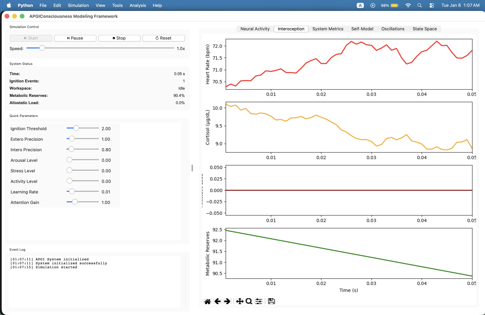

Computational Neuroscience Framework
Allostatic Precision-Gated Ignition
A computational implementation of consciousness based on active inference, predictive processing, and allostatic regulation. Designed to model human-like cognitive processes through biologically-inspired architectures.

APGI integrates multiple theoretical frameworks to create a comprehensive model of consciousness and cognitive processing. It implements biologically plausible mechanisms for perception, attention, decision-making, and self-awareness.
Implements variational free energy minimization and Bayesian inference through hierarchical predictive coding across 4 levels.
Models physiological states and maintains homeostatic balance through interoceptive predictive processing.
Implements global workspace broadcasting with threshold-based ignition events following 300-500ms timeline of consciousness.
Maintains minimal and narrative self-representations with coherence tracking and integrity monitoring.
Tests temporal attention limitations and consciousness timing through rapid serial visual presentation.
Examines visual perception failures when changes occur during saccades or brief interruptions.
Studies competitive perception when different images are presented to each eye simultaneously.
Assesses decision-making under uncertainty and somatic marker hypothesis in risky choices.
Tests subliminal processing and threshold detection for conscious vs. unconscious perception.
Comprehensive metrics including Phi integration, PCI complexity, and coherence tracking.